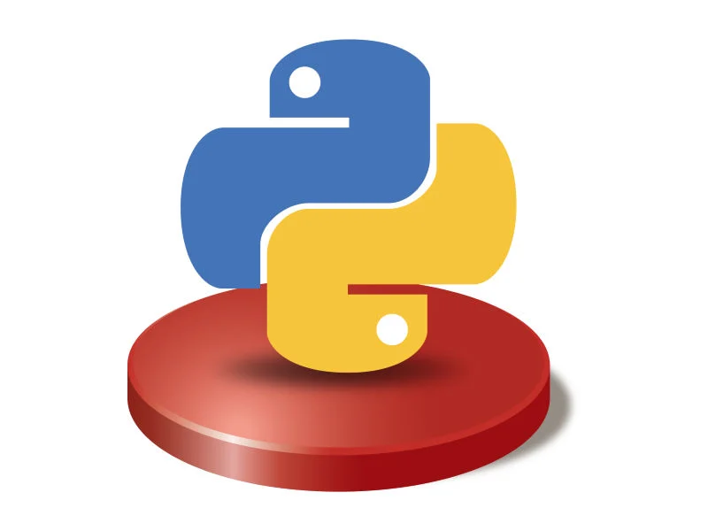

Python es un lenguaje de programación creado por Guido van Rossum y publicado por primera vez en 1991. Se caracteriza por tener una sintaxis sencilla y fácil de leer, por lo que es uno de los lenguajes más utilizados actualmente.
Python tiene una sintaxis clara y permite desarrollar programas utilizando diferentes estilos de programación. Además, cuenta con una gran cantidad de bibliotecas que facilitan la creación de distintos tipos de aplicaciones.
Python se utiliza en desarrollo web, inteligencia artificial, análisis de datos, automatización, aprendizaje automático y desarrollo de aplicaciones. También es muy utilizado para aprender programación debido a su facilidad de uso.